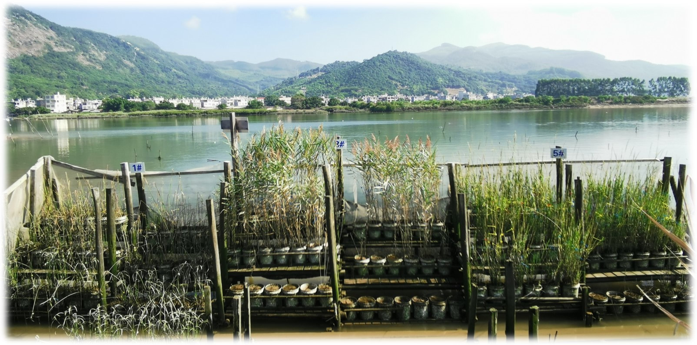
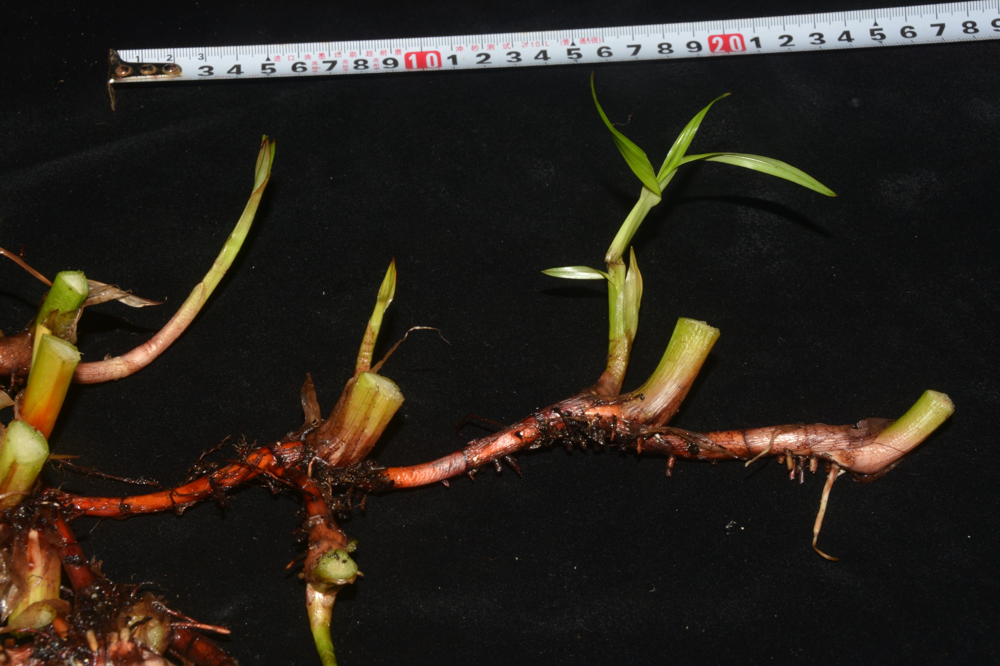
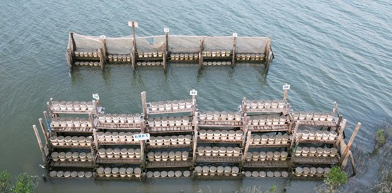
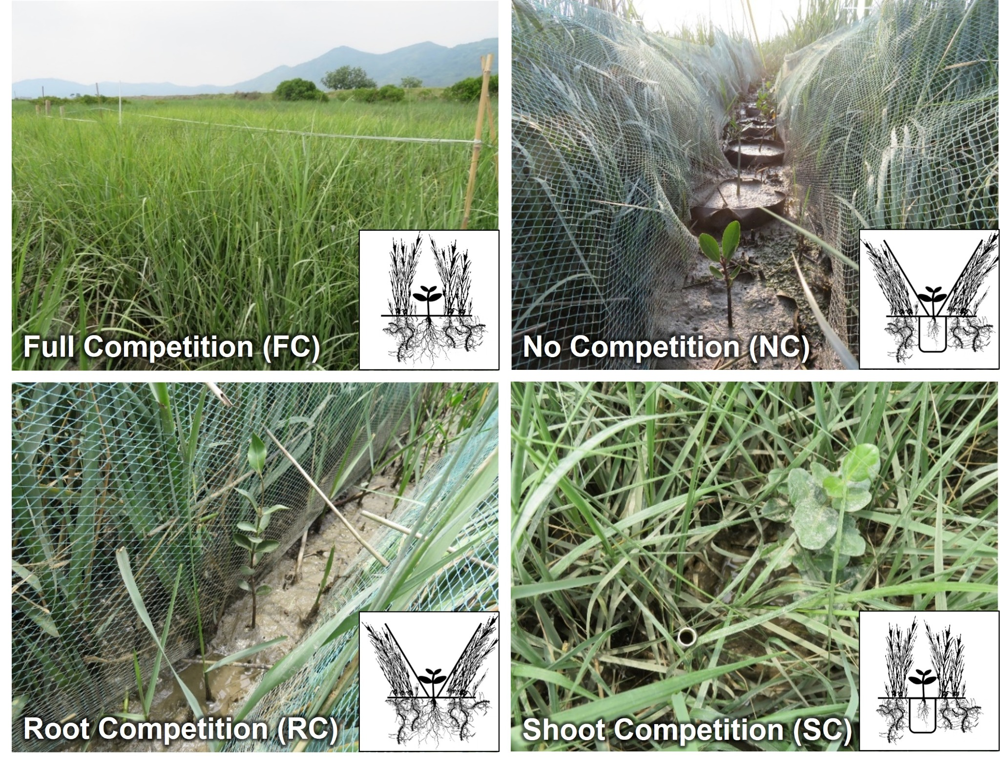

Research
Focusing on mangrove-Spartina alterniflora ecotones in the southern coast of China.
Both the manipulated field experiments and in-situ observations are employed.
Plant clonality: The hidden half of adaptive strategy in coastal vegetations

The flexible clonal expansion and resource reserve strategies of clonal plants to heterogeneous habitats play a key role in their widespread distribution across ecosystems and promote plant community succession. We are interested in how different coastal salt marshes and woody clonal mangroves with distinct clonal growth organs and bud banks contribute to plant persistence, post-disturbance recovery and colonization after large-scale invasive Spartina eradication program in coastal wetland. We aim to identify and classify belowground organs, quantify clonal traits, and integrate belowground ecology into broader ecological and evolutionary questions.
Simulating inundation and salinity gradient by mesocosm arrays

An in-situ mesocosm experiment at multiple sites within an estuary across tidal elevations along a salinity gradient. We have launched this experimental set-up to test both native and invasive saltmarsh and mangrove plants, focusing on how their life history traits (including growth, phenology, and reproduction) vary across different environmental factors. We aim to reveal the ecological response of different coastal plants to the changing environment under rising sea-level.
Plant interactions: tree-grass competition at distinct interface

The competitive interactions from above- and below-ground between woody seedlings and herbaceous vegetation have influenced the encroachment of woody plant into grasslands. Using the “target technique” to separate above- and below-ground partition and to achieve four competition treatments, we aim to examine the variations of competition responses and the functional traits of different mangrove species in different growing stages. We aim to better understand the regenerations of mangrove in rapid changing mangrove-salt marsh ecotone.